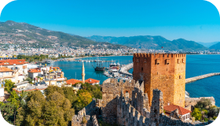
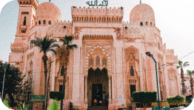
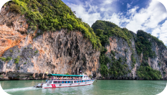
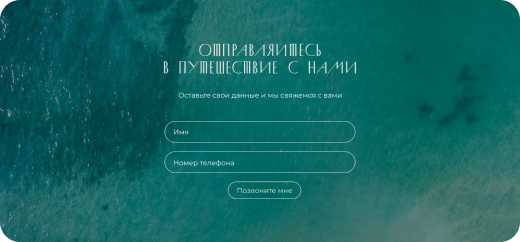

ГОРЯЩИЕ ТУРЫ
Вступайте в Viber и Telegram-сообщества, следите за Горящими турами!
Горящие туры
— это отличная возможность позволить себе долгожданный отдых по очень привлекательным ценам. Лучшие курорты Европы, заманчивые восточные страны и самые далёкие уголки земли можно посетить всей семьёй без лишних хлопот и завышенных тарифов на перелёты. Качество и сервис таких туров ничем не отличается от стандартных предложений, поэтому вам нечего бояться. Многие рачительные клиенты выжидают именно такие предложения и не слабо экономят на отдыхе. Главное, искать в проверенных местах у опытных туроператоров.Как формируются горячие туры?
Горящие предложения имеются в запасе любого турагентства. Они формируются путём падения спроса на одно из направлений, реализуемых чартерными рейсами, а также, когда туроператор просто не успевает продать билеты в установленные сроки. В таких случаях стоимость на путешествие падает, а горящие туры на цены все включено становятся более, чем доступными. Ещё одной особенностью горящих туров являются близкие даты вылета. Большинство путёвок реализуются в течение 1–2 недель, если не раньше. Стоит учитывать этот факт и готовиться к поездке заранее.
Практически все горящие туры имеют актуальность в низкий туристический сезон по самым популярным направлениям, таким как:

Турция

Египет

Таиланд
Не найдёте вы горячих предложений в направлениях, по которым осуществляются регулярные рейсы местных авиакомпаний. Выгодные туры производятся только чартерными перелётами.
КАК ЗАКАЗАТЬ ТУР
1
2

+375 44 771-78-78
+375 44 772-78-78
+375 33 667-56-06
+375 29 889-64-26
+375 29 150-95-47 (Польско-говорящий сотрудник)
Заполните специальную форму на сайте или свяжитесь с нами по контактным телефонам
Наши менеджеры свяжутся с вами и подробно расскажут о всех деталях путешествия, сроках подготовки документов, окажут помощь в оформлении визы и будут на связи с вами на протяжении всего тура.
Важно!
Т.к. забронировать горящие путёвки нельзя, следите за базой туров нашего агентства — она ежедневно обновляется и имеет массу вариантов на любой вкус и кошелёк. Актуальность каждого из представленных вариантов может измениться, поэтому заблаговременно уточняйте наличие туров у специалиста компании.